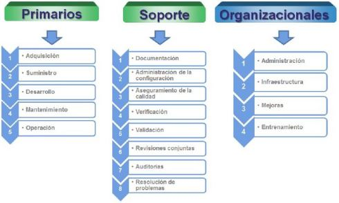

La estructura del estándar ha sido concebida de manera que pueda ser adaptada a las necesidades de cualquiera
que lo use. Para conseguirlo, el estándar se basa en dos principios fundamentales: modularidad y
responsabilidad. Con la modularidad se pretende conseguir procesos con un mínimo acoplamiento y una máxima
cohesión. En cuanto a la responsabilidad, se busca establecer un responsable para cada proceso, facilitando
la aplicación del estándar en proyectos en los que pueden existir distintas personas u organizaciones
involucradas, no importando el uso que se le dé a este.
Esta norma agrupa las actividades que pueden llevarse a cabo durante el ciclo de vida del software en cinco
procesos principales, ocho procesos de apoyo y cuatro procesos organizativos.

Procesos Primarios:
Proceso de adquisición: Define las actividades del adquiriente, la organización que adquiere un
sistema, producto de software o servicio de software.
Proceso de suministro: Define las actividades del proveedor, organización que proporciona un sistema,
producto de software o servicio de software al adquiriente.
Proceso de desarrollo: El Proceso de Desarrollo contiene las actividades y tareas del desarrollador.
Proceso de operación: Define las actividades del operador, organización que proporciona el servicio
de operar un sistema informático en su entorno real, para sus usuarios.
Proceso de mantenimiento: Define las actividades del responsable de mantenimiento, organización que
proporciona el servicio de mantenimiento del producto software; esto es, la gestión de las modificaciones
al producto software actualizada y operativa.
Procesos de Soporte
Proceso de documentación: Define las actividades para el registro de la información producida por
un proceso del ciclo de vida.
Proceso de administración de la configuración: Define las actividades de la gestión de la
configuración.
Proceso de aseguramiento de la calidad: Define las actividades para asegurar, de una manera
objetiva, que los productos software y los procesos son conformes a sus requisitos especificados y
se ajustan a sus planes establecidos.
Proceso de verificación: Define las actividades (para el adquiriente, proveedor o una parte
independiente) para verificar hasta un nivel de detalle dependiente del proyecto software, los
productos software.
Proceso de validación: Define las actividades (para el adquiriente, proveedor o una parte
independiente) para validar los productos software del proyecto software.
Proceso de revisión conjunta: Define las actividades para evaluar el estado y productos de una
actividad. Este proceso puede ser empleado por cualquiera de las dos partes, donde una de las partes
(la revisora) revisa a la otra parte (la parte revisada), de una manera conjunta.
Proceso de auditoría: Este proceso puede ser empleado por dos partes cuales quiera, donde una
parte (la auditora) audita los productos software o actividades de otra parte (la auditada).
Proceso de resolución de problemas: Define un proceso para analizar y eliminar los problemas
(incluyendo las no conformidades) que sean descubiertos durante la ejecución del proceso de desarrollo,
operación, mantenimiento u otros procesos, cualquiera que sea su naturaleza o causa.
Procesos Organizacionales
Proceso de gestión: Define las actividades básicas de gestión, incluyendo la gestión de proyectos,
durante un proceso del ciclo de vida.
Proceso de infraestructura: Define las actividades básicas para establecer la infraestructura de
un proceso del ciclo de vida.
Proceso de mejora: Define las actividades básicas que una organización (adquiriente, proveedor,
desarrollador, operador, responsable de mantenimiento o gestor de otro proceso) lleva a cabo para
establecer, medir, controlar y mejorar su proceso del ciclo de vida.
Proceso de entrenamiento: Define las actividades básicas para conseguir personal adecuadamente
formado.
Beneficios
– Implica a la gente para mejorar su ambiente laboral y su relación con el usuario final.
– Permite localizar las áreas prioritarias de la empresa y focalizar en ellas los recursos.
– Integra iniciativas de mejora existentes en un marco global.
– Educa al personal de la empresa en los conceptos fundamentales.
– Facilita la comparación con otras organizaciones entre pares, facilitando el proceso de compartir
buenas prácticas entre ellos.
Similitudes
El estándar 12207 se relaciona con normas de calidad, especialmente la ISO 9001.
Tiene una gran relación con la segunda parte de la norma ISO/IEC 15504.